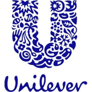
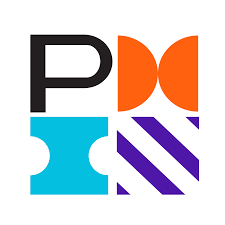

Syutra Permatasari
Market Researcher
What I am all about.
- Over 10 years of experience in the marketing research, across Middle East, Africa Regions, Indonesia, Malaysia, and Philippines.
- ‘Translator’ of complex data into easy to understand and actionable insights.
- Extensive experience leading and managing complex and large scale projects that involve different methodologies in a diverse & dynamic environments.
- Self-starter, fast learner, smart worker, team player, creative, and cheerful.
Skills
- Qualitative Research
- Quantitative Research
- Shopper Studies
- A/B Testing
- Social Listening
- UX Testing
- Market Sizing
- Brand Health
- Survey Tools
- Google Analytics
- SPSS
- Nielsen Software
- Project Management
- People Management
Experience
Feb 2020 - Present
Global Media Analytics Lead, MENA Region
Nielsen
Dubai, United Arab Emirates
- Responsible to build new business vertical in the region.
- Leading and supporting on new custom research business activity / proposals / innovation covering 10+ markets in the region
- Client’s consultant to translate business needs into custom research (Qualitative, Quantitative, Online, Offline approach)
Jun 2019 - Jan 2020
Senior Manager - Consumer Insight
Nielsen
Manila, Philippines
- Focused on tracker/ad hoc project process improvement
- Main custodian for Leading Telecom Company, Financial Technology, and Airlines
- Best practice and knowledge transfer from MENAP region
- Managed team of 4 researchers and 20+ operational team
Jan 2014 - Jun 2019
Manager - Consumer Insight
Nielsen
Dubai, United Arab Emirates
- Plan, Coordinate, and execute over 100 studies ranging from Innovations, U&A, Shopper Insights, Point of Sales & Brand tracking studies
- Demonstrated expertise in different industries across the region
- Increase business revenue within 3 years, contributed ~30% of the target
- Managed a diverse team, 4 people with different expertise
- Worked with the sales, marketing, insight, and R&D to drive business growth by doing various projects, involved in Company’s Annual Operating Plan
Jun 2011 - Dec 2013
Senior Research Executive
Kantar TNS
Jakarta, Indonesia
- Managed and executed 50+ large scale projects
- Organized and liaised with the Operations team in managing survey set up, monitoring, reporting and data analysis
- Conducted end-to-end work for clients from analysis, reporting to quality checklist all reports for alignment to request & accuracy
- Worked with and delegated tasks to 1-2 junior researchers to achieve the operational performance indicators
Apr 2010 - Oct 2010
Research & Training Manager
UI Consulting
Jakarta, Indonesia
- Manage training for mid-senior manager level of Indonesian Aviation
- Assist Angkasa Pura Mid-Senior manager level team to study and plan the development of a new Terminal at International Airport
- Organized a competitive analysis trip to Bangkok, Thailand

Sept 2009 - Mar 2010
Intern, Corporate Relations Officer
Unilever
Jakarta, Indonesia
- Planned and executed several CSR programs in various communities, Dealt with local government, NGO, Vendors, and local communities
- Managed & contributed to Public Health Education blog owned by Unilever Indonesia Foundation
- Executed brand social campaign
Education
2006 - 2010
Bachelor in Social Science
University of Indonesia
Jakarta, Indonesia
Cum Laude in Sociology (GPA 3.53)
Trainings
2020
Google Analytics Individual Qualification
Certified by Google
Digital Analytics & Google Analytics Platform

2022
PMP Certification Training
Certified by PMI
Project Management International certification for PMP
Client List
Some of CPG & Tech clients:
References
Happy to give reference contacts